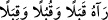
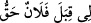
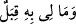
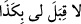
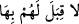
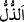
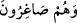
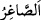

“Dön” emri, yukarıda geçen beş çoğul ifâdeden sonra müfred olarak kullanılmıştır.
Çünkü “dönme” fiili, bu elçiye mahsustur. Yardım etmek ve benzerleri ise geneldir.
el-Muhtâr’da der ki: “ Onunla yüz yüze geldi, karşısından,
gözüyle/açıkça gördü, demektir. Allah Teâlâ: “yahut azâbın göz göre göre kendilerine
gelmesini…” (el-Kehf, 55) buyurur.
“ Benim falanın yanında/katında hakkım var, demektir. “
Benim, ona karşı bir gücüm yok, demektir.”
el-Müfredât’tan anlaşılan aslında bu kelimenin “ (yanında)” mânâsına olduğu,
(yanında)” mânâsına olduğu,
sonra karşılık vermeye gücü ve kuvveti olmak mânâsında mecâzen kullanıldığıdır. “ Benim ona karşı koymam mümkün değil, demektir. “ Onların ona
mukavemet etmeye güçleri yok, demektir.
“Onları muhakkak surette” izzet sâhibi ve oraya yerleşmiş kimseler olduktan sonra
“hor ve hakir halde” îtibarsız ve şerefsiz bir durumda, horlanan esirler oldukları halde
“oradan” Sebe’den ve topraklarından “çıkarırız!”
“ izzet ve mülkün/saltanatın elden gitmesidir.
“ onların çıkarılmalarının sürgün yoluyla olduğunu ifâde etmektedir. “ aşağı mertebeye/aşağılama ve horluğa râzı olan, demektir.
Bütün izzet ve şeref, tasdik ve ikrardan kaynaklandığı gibi bütün zillet ve horluk da
inkârdan ve hatada ısrardan kaynaklanır.
Cezâyı bildirme cezâdan önce geldiği için Süleyman (a.s.), bunu yerine getirmesi için
elçinin geri dönmesini emretti.
Mesnevî’de der ki:
Ey utanç içindeki elçiler, dönün geri
Altın sizin olsun, bana kalbinizi getirin kalbinizi
Çünkü âşığın yüzü, Allah’ın baktığı yerdir
Altın mâdeni ise güneşin baktığı yer
Güneş ışığının baktığı yer nere
Akılların Rabbinin baktığı yer nere?
Elçiler, ben sizi elçi gönderiyorum
Sizin açınızdan hediyeyi reddetmem, kabul etmemden iyidir
Belkıs’ın huzurunda, burada gördüğünüz
İlginçlikleri, altın sahrayı anlatınız
Böylece bizim altına tamah etmediğimizi bilsin
Altını yaratandan altın alıp getirdiğimizi anlasın
Ey Belkıs, gel, yoksa kötü olur
Askerin sana düşman olur, senden yüz çevirir
Perdedârın kapını söker
Kendi canın sana gönülden düşman kesilir